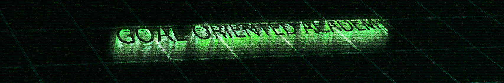
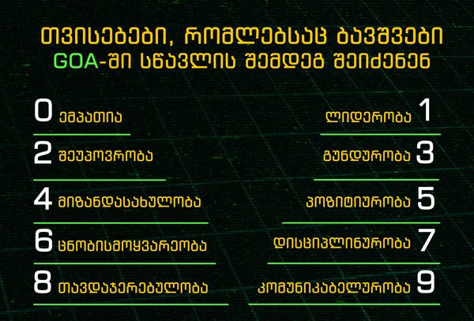
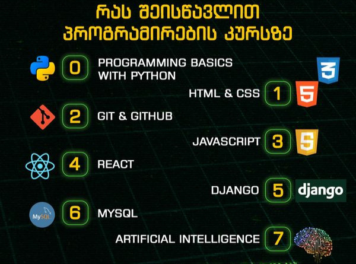
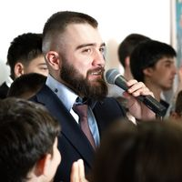
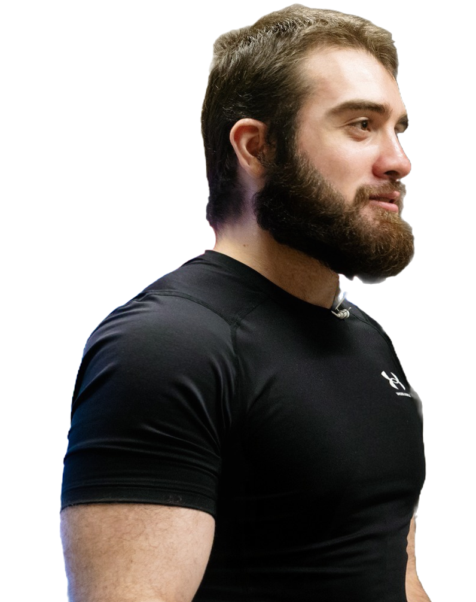
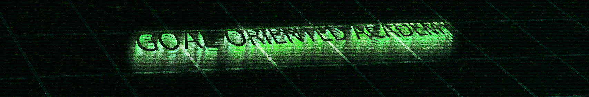
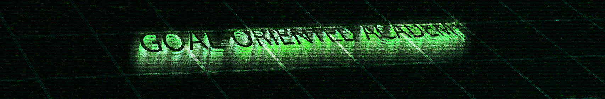

საქართველოში N1 პროგრამირების და ლიდერობის აკადემია

საქართველოში ერთადერთი და ყველაზე სანდო აკადემია, რომელიც გიდგებათ პერსონალურად, ადამიანურად და ბოლომდე გეხმარებათ ცხოვრებისეული პრობლემების აღმოფხვრაში
აკადემიაში სტუდენტები შეისწავლიან თანამედროვე ბიზნესისთვის საჭირო ტექნოლოგიებს და პროგრამირებას, ამავდროულად, გაძლიერდებიან პიროვნულად და განივითარებენ მრავალ უნრებს

გოაში თქვენი ბავშვი არა მარტო პროგრამირებას ისწავლის არამედ გაიცნობს მეგობრებს, ისწავლის გუნდურ მუშაობას, მოიშორებს მავნე ჩვევებს როგორიცაა: კომპიუტერთან ჯდომე და საათობით თამაში, ქართველი იუთუბერების და ტიკტოკერების ყურება. ასევე თქვენ შვილებს რაც შეიძლება თანამედროვედ ვუხსნით და ვასწავლით გაკვეთილებს.
კურსის ხელმძღვანელი: ნიკა კეშელავა
მაქვს 7წლიანი გამოცდილება ტექნიკური საგნების და პროგრამირების სწავლების მიმართულებით. ვმუშაობ რამდენიმე აკადემიაში ერთდროულად პროგრამირების მასწავლებლად/ლექტორად. შევასწავლი მოსწავლეებს პროგრამირების საფუძვლებს და გავუღვივებ იმ უნარებს, რაც დასჭირდებათ სამომავლოდ ნებისმიერი ტექნოლოგიის ინდივიდუალურად ასათვისებლად/გამოსაკვლევად.
ასაკის დიაპაზონი არ არის შეზღუდული, მყავს როგორც 7 წლის მოსწავლეები, ასევე - 45-ის. თითოეულ მათგანს ვუდგები ისე, როგორც მისთვის არის ოპტიმალური და მორგებული. მაქვს კარგი კომუნიკაციის უნარები და ვარ ძალიან მეგობრული. რაც მთავარია, ვაკეთებ ჩემ საქმეს ორმხრივი სიამოვნებისთვის და გრძელვადიანი საზოგადო



ეს არის ბატონი ნიკა კეშელავა Goal-Oriented Academy-ის დამფუძნებელი. ამ უნიკალური კაცის გამოა რომ ამდენმა ქართველმა ბავშვებმა და დიდებმაც იცის პროგრამირება. ახლა კი მოვისმინოთ ბატონი ნიკას სიტყვენი "ჩემმა დიდმა ბაბუამ 100 წლის წინ საკუთარ სახლში სკოლა გახსნა და ათასობით ახალგაზრდა გაანათლა
დღეს კი მე ღირსეულად მივუყვები ჩემი წინაპრების გზას და დიდი შემართებით ვაშენებ Goal-Oriented Academy • GOA -ს
ჩემი მიზანია საქართველოში ყველა ბავშვი დავაინტერესო ტექნოლოგიებით, პროგრამირებით, ხელოვნებით. და მოვაშორო ისინი დამაჩლუნგებელ ქართველ იუთუბერებს/ტიკტოკერებს, რომელთაგანაც ბავშვები კარგს არაფერს სწავლობენ.
ნუ გააფლანგვინებ შვილს თავის პოტენციალს, შემოიყვანე Goal-Oriented Academy • GOA-ში, საქართველოში N1 პროგრამირების და ლიდერობის აკადემიაში , სადაც იგი გახდება საკუთარი თავის საუკეთესო ვერსია და შეიქმნის უზრუნველ მომავალს".

 
